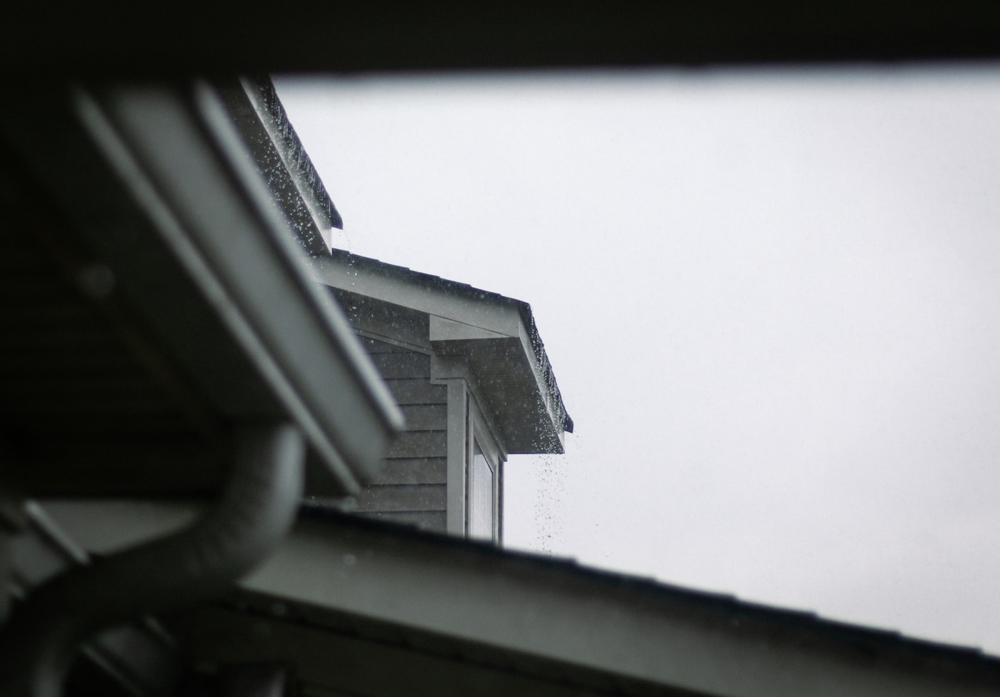

After the hail, before you sign anything.
What storm damage actually looks like, how a claim really works, and why the truck that shows up in your driveway on Tuesday afternoon is worth being careful about.
Most hail damage does not look like damage.
People expect a hole. What actually ends a shingle is smaller than a coin and nearly invisible from the ground, which is exactly why this gets argued about with adjusters.
- Bruising
- A hailstone knocks the granules loose and leaves a soft black spot. The shingle is not punctured, but the mat underneath is now exposed to sun and the clock on that section has started.
- Granules in the gutter
- The clearest early sign, and the easiest to check yourself. A handful of grit at the bottom of a downspout after a storm means the surface that protects the shingle is coming off.
- Creased or lifted tabs
- Wind damage rather than hail. A tab that got folded back and laid down again has a hairline crack across it that will open the first cold night.
- Soft metal tells the story
- Adjusters read the gutters, the vents and the AC fins first. Metal dents where shingles hide the evidence, so those surfaces date the storm and prove the hail was big enough to matter.

How the claim actually goes.
Four steps, in this order. The order matters more than most people are told, because filing before anyone has looked at the roof is how denials end up on your record.
-
1
Get it documented first
Before you call the carrier. If there is nothing there, you have lost nothing and filed nothing. A denied claim still sits on your history and can follow you to your next premium.
-
2
You file, not us
You call your carrier and open the claim yourself. We hand you the photographs, the date of the storm and the measurements, and you tell them what you have.
-
3
We meet the adjuster on the roof
This is where claims are won or lost. We walk it with them, show what we found, and make sure the whole slope gets scoped rather than four test squares on the least damaged elevation.
-
4
The work is scheduled around the money
Carriers usually pay in two parts, holding the second until the work is finished. We schedule to that, so you are never asked to front the depreciation out of pocket.
How to read the truck in your driveway.
Plenty of out-of-state crews do competent work. The problem is not where they are from, it is that the warranty leaves with them in October.
-
Worth asking about
Where the company was three years ago and where it will be in three more. Whether the warranty on the workmanship is backed by somebody who will still be answering an Iowa phone number. Whether the license and insurance are in this state.
-
Worth being firm about
Nobody needs a signature today. An offer to waive or absorb your deductible is illegal in Iowa and it is a straightforward tell. Nobody should be starting work before your carrier has scoped the loss.
We are not the only good option in this metro, and we will happily tell you which of our competitors we would call. What we would not do is hand a roof to a crew that will be in another state before the first freeze.
If it is leaking right now
Call, do not use the form. We hold slots every week for active leaks and we would rather tarp your roof tonight and sort the paperwork tomorrow.
In the meantime: move what you can out from under it, put a bucket down, and if the ceiling is bulging with trapped water, poke a small hole at the low point and let it drain into the bucket. It feels wrong and it saves the whole ceiling.
Storm questions
What people ask after a hailstorm.
A single weather claim is treated differently from an at-fault claim, and in a widespread hail event your whole rating area usually moves together whether or not you personally filed. What genuinely can hurt you is a pattern of denied claims, which is the argument for having the roof documented before you open one.
Not necessarily. Hail falls in narrow swaths and it is genuinely common for one side of a street to be hit and the other side to be untouched. Direction matters too: a storm that came in from the southwest can total that elevation and leave the north slope perfect.
Most Iowa policies give you a year from the date of loss, some less, and the clock runs from the storm rather than from when you noticed. Check your policy language. If a storm went through last spring and you never had it looked at, it is worth doing before that window closes.
Then you should have a second set of photographs, and you should have them free. If they are right, our report will say the same thing and you have lost nothing but forty-five minutes. If they are wrong, you have just saved a roof.
Sometimes. A denial based on a partial scope or a missed elevation can be reopened with better documentation, and that is worth trying. A denial because there genuinely is not storm damage cannot, and we will tell you that instead of taking your money to chase it.

Get it documented before you file.
Free, about forty-five minutes, and you keep the photographs whatever you decide to do with them.